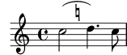

| [ << Tweaks and overrides ] | [Top][Contents] | [ Workaround >> ] |
| [ < Positionnement des silences multimesures ] | [ Up: Tweaks and overrides ] | [ Inscrire le numéro de mesure dans un cadre ou un cercle > ] |
Positionnement d’une annotation à l’intérieur d’une liaison
Lorsqu’une annotation doit s’incrire à l’intérieur d’une liaison, la
propriété outside-staff-priority doit être désactivée.
\relative c'' { \override TextScript.avoid-slur = #'inside \override TextScript.outside-staff-priority = ##f c2(^\markup { \halign #-10 \natural } d4.) c8 }

| [ << Tweaks and overrides ] | [Top][Contents] | [ Workaround >> ] |
| [ < Positionnement des silences multimesures ] | [ Up: Tweaks and overrides ] | [ Inscrire le numéro de mesure dans un cadre ou un cercle > ] |